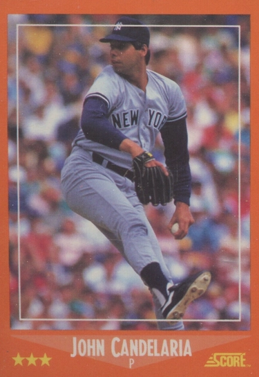

John Candelaria "The Candy Man"
Career Highlights & Facts
(Facts are AI-generated and may require verification)
- Threw a no-hitter in a game where the crowd received complimentary candy bars.
- Led the major leagues in ERA during a 20-win season.
- Struck out 14 batters in a single postseason game, setting a record that stood for over 2 decades.
Would you like to find out more about John Candelaria?
Player Biography
John Candelaria
January 4, 2012
/
in
BioProject - Person
1970s All-Stars
1979 Pittsburgh Pirates
,
Puerto Rico and Baseball
/
by
admin
This article was written by
Steve West
You could say that John Candelaria’s story is a tale of heartbreak, or a tale of unfulfilled promise, or a tale of self-destruction, and you might be right every time. On the other hand, how unlucky can a person be if he managed to pitch in the major leagues for 19 seasons? The Candy Man would ignore all that talk about being star-crossed, and tell you that he spent his life the way he wanted, not how others thought he should. As he said several times during his career, “Life is to enjoy. It’s a mystery to be lived, not a problem to be solved.”
1
John Robert Candelaria was born on November 6, 1953, in Brooklyn, New York, to Puerto Rican parents. His father, also named John, was born in Arecibo, Puerto Rico, in 1932, and his mother, the former Felicia Bauza, was born in Rio Piedras, Puerto Rico, in 1934. Both moved from Puerto Rico when they were children to New York, where they met and began a family. John had a brother, Michael, and two sisters, Maria and Dolores. As a child John learned to throw and catch from his father, who played amateur baseball in the New York area. His father saw his talent early: “This kid really has it,” he told his family when John was just 5 years old.
2
But John’s parents divorced and his father moved back to Puerto Rico when John was 6. His father worked as a car salesman, but John knew little of him once he left, relying instead on his mother, a homemaker, who would closely follow his career as an athlete.
Growing up in Brooklyn, John was a Yankees fan, although with money tight he didn’t attend too many games. “I didn’t go unless there was a doubleheader,” he said. “I used to sit in the bleachers for 75 cents.”
3
He played baseball at LaSalle High School, where he attracted attention from scouts during his freshman season, but he felt that he was being worn out by pitching so much, and so he quit baseball. He switched to basketball, where he became the school’s all-time leading scorer and second all-time rebounder (to Lew Alcindor, later known as Kareem Abdul-Jabbar
4
), and his performances on the court attracted college scouts from across the country. He was selected to play for Puerto Rico in the 1972 Olympics, but suddenly decided that he would rather play baseball instead, believing that he could be in the major leagues in baseball before he would even be out of college if he were playing basketball.
5
Candelaria performed well enough in his return to baseball that he was scouted by Pittsburgh Pirates scout Dutch Deutsch,
6
who remembered him from his first year in high school, and was drafted in the second round of the 1972 draft by the Pirates. Candelaria was in Puerto Rico, preparing to play basketball in the Olympics, when Pirates officials arrived to sign him. They brought
Roberto Clemente
with them to act as translator, and Clemente told him in Spanish to reject their offer of $15,000, that he was worth much more.
7
He did, and Clemente’s advice proved sound, as Candelaria eventually signed for $40,000.
8
After signing with the Pirates Candelaria was sent to Charleston (South Carolina) of the Class-A Western Carolinas League for the remainder of the 1973 season, going 10-2 despite feeling the effects of not having pitched regularly for so long. In his best start he threw a one-hitter – allowing the hit to the opposing pitcher in the sixth inning. Moving to Salem (Virginia) of the Class-A Carolina League in 1974, he went 11-8, but suffered from back pain throughout the season. This injury would become a recurring motif during his career. Candelaria sometimes claimed that it began when he slipped on the mound during a start in 1974, but at other times he said it came from a childhood injury, and Pirates doctors even suggested the problem dated back to when he was born.
9
At various times he also said that an operation to fuse the bones in his spine might help with the pain he often felt while pitching, but that it would end his baseball career.
10
After the 1974 season Candelaria went to Puerto Rico to play winter ball for Bayamon, and learned from the veteran players there. “They taught me to spot my pitches and to use my curveball with more success,” he said.
11
He pitched winter ball in Puerto Rico for three seasons.
Candelaria had one start for Charleston (West Virginia) of the Triple-A International League at the end of the 1974 season, and was assigned there again in 1975. He broke out, running his record to 7-1 with a 1.77 ERA. “His control is super. … He is throwing consistently harder than he did when I first saw him two years ago,” Charleston manager
Steve Demeter
said.
12
When left-hander
Ken Brett
went on the disabled list the Pirates needed a starter, so Candelaria got the call and made his major-league debut on June 8 in Pittsburgh, in the first game of a doubleheader against the San Francisco Giants. He pitched six innings and impressed, even though he gave up all the runs in a 3-1 loss. He stayed in the rotation, and on June 20, before 47,867 at
Shea Stadium
, he pitched in New York for the first time, where with a large group of family and friends watching, Candelaria earned his first major-league win by throwing his first complete game to beat the New York Mets, 5-1. “It was something special. Something I’ll always remember,” he later said.
13
Despite his early success, Candelaria knew he hadn’t made the big time just yet. “I’ve got a lot to prove,” he said.
14
But he pitched well enough to stay with the team, finishing 8-6 with a 2.76 ERA. He ended the season pitching in the playoffs, starting Game Three of the NLCS in Pittsburgh, which the Cincinnati Reds won in 10 innings to complete their sweep of the then best-of-five postseason series. Even so, Candelaria struck out 14 batters in 7⅔ innings, an NLCS record that was not surpassed until 1997. “He’s 6-5 and he’s all arms and legs,” said
Pete Rose
, although Candelaria was actually 6-7 (and 210 pounds).
15
Rose also said that it was “the greatest pressure game I’ve seen any pitcher pitch.”
16
Returning with the Pirates in 1976, the 22-year-old Candelaria showed composure beyond his years as he pitched in the rotation all season. “He has all the tools. … He knows what he is doing on the mound,” said Pirates manager
Danny Murtaugh
.
17
“He is a finished major-league pitcher despite his youth.”
18
He did get one relief appearance when on May 26 he threw three shutout innings to get his first career save.
But his highlight
came on August 9 at home
against the Los Angeles Dodgers. That night the Pirates held “Candy Night” and handed out candy bars to the crowd of 9,860, honoring the player who was now nicknamed the Candy Man, after the popular Sammy Davis Jr. song. Candelaria responded to the honor by throwing a no-hitter to beat the Dodgers, 2-0. He was perfect for every inning except the third, when he walked a batter and two others reached on errors to load the bases, but he got out of the jam and sailed the rest of the way home. (Many years later Candelaria admitted that one winter he needed to work out, and the game ball from his no-hitter was the only ball he had, so he practiced with it against a concrete wall and destroyed it.
19
)
In 1977 Candelaria was feeling much more comfortable as a major leaguer. He had bought a home in Monroeville, just east of Pittsburgh, and in March he signed a multiyear contract with the Pirates. Even though he had some shoulder problems during spring training, and was having more back pain after slipping on the mound in Montreal in July, he pitched the full season and pitched well. He capped off his season by winning his last four starts to finish at 20-5, the only time he would win 20 games in his career. He won the ERA title at 2.34 (best in the major leagues), although he only finished fifth in Cy Young Award voting, the only season he got any votes for that award. Candelaria was also selected for his only All-Star team in 1977. (He didn’t get into the game.)
Candelaria came into spring training 21 pounds lighter in 1978, hoping it would help his back, but he ended up with other problems. A sore left elbow in August had him skipping a few turns through the rotation, and he ended the year at 12-11. In 1979 he had numerous little injuries, not only from the back pain, but from a minor automobile accident on July 31, and then late in the season he pulled a muscle in his ribcage. He had helped the team return to the postseason with his 14-9 record, and started
Game One of the NLCS
, giving up two runs in seven innings as the Pirates won, 5-2, in 11 innings, starting their three-game sweep of the Cincinnati Reds.
In the World Series
Candelaria started Game Six
against Baltimore and struggled after being staked to a 3-0 lead, giving up two runs in the third inning before a 67-minute rain delay, and when he returned after the delay he allowed all four batters he faced to reach base (one on an error) before being pulled and taking the loss. But the Pirates fought back from a three-games-to-one deficit, and Candelaria started Game Six, in which he controlled the Orioles batters. He threw six shutout innings, allowing just two runners to get as far as second base, before being lifted for a pinch-hitter.
Kent Tekulve
came in and closed out the final three innings, the pair combining on a shutout that tied the World Series. “It’s a tribute to him that he can pitch in pain the way he did tonight,” Tekulve said.
20
The next night the Pirates did it again,
beating the Orioles, 4-1, to become world champions
.
In 1980 Candelaria came back to earth, and despite throwing the most innings of his career (233⅓) he had his first losing record at 11-14, and his highest ERA to that point at 4.01. The 1981 season was much worse, though, when on May 10 he felt something in his arm when he threw a pitch in a cold and wet game in St. Louis. Initially diagnosed with a torn biceps tendon, Candelaria turned to Dr. Paul Bauer, an expert in body mechanics. Bauer said he did not have a torn tendon, but rather nerve problems in his shoulder, and said Candelaria needed rehab and changes in his pitching motion. Candelaria went along with this idea, missing the rest of the season while working in Bauer’s lab in San Diego, watching himself pitch on videotape and adjusting the way he pitched. It all worked; he avoided surgery and came back feeling better than ever. “I believed in myself, but they’re the ones who showed me what to do. Without them I don’t think I’d be pitching today.”
21
Candelaria returned in 1982 and pitched well all season, although no longer able to go as long as he did earlier in his career. He had said earlier that “I’m not a nine-inning pitcher. The back just aches too much for me to pitch nine innings.”
22
Now it showed; he completed just six games in the next three seasons (he had completed 11 in 1976 alone). In those years he also talked more about long-term contracts, but enmity was growing between Candelaria and the Pirates front office. He would snipe about management, and they would snipe back, a pattern that continued for the rest of his time in Pittsburgh. (At one point he called the general manager an “idiot” and a “bozo.”) He said he would never re-sign with the Pirates, although he suggested that the length of the contract would be the most important factor. Sure enough, he soon signed a new four-year contract with the Pirates, which made him happy again, at least for the short term.
Candelaria had a tumultuous personal life, making what might be considered poor choices numerous times. He had married and divorced twice in the 1970s. His first marriage was to a woman who had three children from her prior marriage. He successfully fought a paternity suit after blood tests proved a child was not his, and the papers for his second divorce were served between innings of a game he was pitching in Pittsburgh.
23
He finally settled down in his relationship with a flight attendant, Donna Hall, and the couple had two children, Amber born in 1982 and John in 1983. But tragedy soon struck, with John Jr. nearly drowning after falling in the family pool in Sarasota, Florida, on Christmas Day of 1984. The child spent months in the hospital and then at home, all the time in a coma, before he died in November 1985. Candelaria was naturally devastated, and spent most of the year with his mind on far more important things than baseball.
During that time Candelaria had problems on the field as well. He had bone chips removed from his elbow in October 1984, and the team decided in 1985 to move him from the rotation to the bullpen, in part due to the surgery and in part due to concerns over his mental condition while dealing with his son. Candelaria initially complained about the move, saying he wanted his contract renegotiated, but after having some success he reconsidered. “Relieving isn’t as bad as I thought it would be … I’m more involved in the games than I used to be,” he said.
24
Candelaria was always considered an oddball, a player who may have been a little too crazy at times. “There’s the starting pitcher for tonight, hat on backward, leaning out the window screaming at people, talking to the grass, thinking about the hitters,” as a teammate once described a bus ride to the ballpark in New York. A more astute analysis of Candelaria’s style might be the following: “He wasn’t particularly sharp. He didn’t do anything extremely well. But when it was all over, he was the winner. Typical.”
25
When asked once what he would be doing if he wasn’t playing baseball: “I’d probably be living in an apartment building in Brooklyn and working for UPS. That would be fun, too.”
26
Fun seemed to be his style, with a live-and-let-live attitude to both life and baseball. “If I ever lose the boy in me, what’s the sense? I plan to be doing silly things when I’m 50. I just want to be remembered as footloose and fancy free.”
27
Eventually the Pirates tired of Candelaria’s antics and insults, and let it be known that they were ready to move him. Several teams were interested, and he was traded to the California Angels in August of 1985, along with pitcher
Al Holland
and outfielder
George Hendrick
, for outfielder
Mike Brown
and pitchers
Pat Clements
and
Bob Kipper
. Candelaria still took some parting shots at the Pirates, saying he had been mishandled by manager
Chuck Tanner
. “I never should have been in the bullpen there,” he said.
28
Switched into the rotation for the division-leading Angels, he pitched well, going 7-3, but the Angels fell just one game short of the Kansas City Royals in the AL West at the end of the season.
In 1986 Candelaria had pain in his elbow in the spring, and managed just two innings in his first start before succumbing to the pain. Surgery to remove bone spurs put him out for three months, although he returned and did well, going 10-2 with a 2.55 ERA, the second lowest of his career. This time the Angels won their division, and Candelaria, with relief help from
Donnie Moore
, pitched well to win
Game Three of the ALCS
against the Boston Red Sox, giving up one run in seven innings. “I’m throwing it better than I have in seven or eight years. … I’m just trying to stay inside myself,” he said.
29
But coming back in Game Seven, Candelaria had a rough outing, although badly hurt by his defense. He gave up three runs in the second and four in the fourth, when
Jim Rice
ended his misery with a three-run home run. All of the runs were unearned – both of those innings had begun with an error – but it made no difference as
Roger Clemens
and
Calvin Schiraldi
held the Angels batters down and
the Red Sox easily won
. After the season, Candelaria was named the AL Comeback Player of the Year by
The Sporting News
.
Perhaps due to his personal problems from the last few years coming back to haunt him, Candelaria struggled with injuries and off-field trouble during 1987. On April 17 he was arrested for DUI after running a stop sign (“It was my off day. … It’s nobody’s business but mine,” he said, earning the ire of anti-drunk driving campaigners), and on May 14 he got a second DUI arrest.
30
The Angels put him on the disabled list the following day for personal reasons, but he returned just two weeks later. In late June they put him back on the DL and checked him into rehab, where he spent more than a month dealing with his problems. “A lot of people assume that since you play this game, you should be happy. Sometimes it’s not that way. We’re all humans and we all have our problems – regardless,” he said.
31
He returned to the team in early August, but they traded him to the New York Mets in mid-September for minor-league pitchers Shane Young and
Jeff Richardson
. The Mets, chasing the St. Louis Cardinals in the NL East for a playoff spot, had just lost starter
Ron Darling
to a torn ligament, and immediately traded for Candelaria, who went 2-0 in three starts but the team fell three games short anyway.
Candelaria signed with the New York Yankees as a free agent for 1988, saying that they had guaranteed him a spot in the rotation, something the Mets wouldn’t do. “Every kid fantasizes about pitching for his hometown team,” he said.
32
In a stunning attack on the Angels during spring training, he told a reporter that
Don Sutton
had set him up for his first DUI arrest the prior year, claiming that Sutton had called police on him because Sutton wanted his spot in the rotation (“He later told me it was out of concern for my well-being,” Candelaria said.)
33
He also slammed Angels manager
Gene Mauch
, calling him a control freak and saying, “He isn’t a very good manager, and I think he knew that I knew that.”
34
Then he suggested that rehab was the team’s idea, and he didn’t want to do it but was forced to, before finally admitting that “I have no one to blame but myself for what was a very tough and frustrating year.”
35
The Angels declined to respond to Candelaria, although they reminded reporters that his tirade was similar to when he left the Pirates.
Things didn’t go much better with the Yankees, though, as Candelaria argued with manager
Lou Piniella
during the season and told reporters he wanted out. Even though he was pitching well with a 13-7 record, when he came down with knee pain in August, he was done for the season, although Yankees doctors suggested he should be able to play. He had surgery for cartilage damage in his knee in October, and although he started 1989 in the rotation he returned to the disabled list in May for more knee surgery, missing another three months. When he returned it was to the bullpen for a few weeks, before being traded once again, this time in late August to the Montreal Expos for third baseman
Mike Blowers
. The Expos were hoping to add veteran talent for the stretch run, and Candelaria spent the last month of the season in their bullpen. But the Expos chose not to go to salary arbitration with Candelaria, so he once again was a free agent at the end of the year.
Candelaria signed with the Minnesota Twins for 1990, spending almost all his time there in the bullpen, compiling a 3.39 ERA along the way. Traded in July to the Toronto Blue Jays for second baseman
Nelson Liriano
and outfielder
Pedro Munoz
, he was used out of the bullpen but also for a couple of spot starts, and struggled, going 0-3 with a 5.48 ERA as the Blue Jays finished two games behind the Boston Red Sox in the AL East.
Yet again a free agent, Candelaria signed with the Los Angeles Dodgers in 1991, his eighth team in six years. Happy to be close to the Orange County home his family had lived in since moving to the Angels in 1985, he took the role of left-handed reliever, pitching in 59 games, the highest total of his career, even though he threw only 33⅔ innings. He returned to the Dodgers in 1992 with the same role, and in 1993 went back to where it all began, signing a one-year contract with the Pirates to be their left-handed reliever. Initial reports of his new-found work ethic – “I’ve mellowed out a lot. Let’s put it that way”
36
– were ruined by his arrest for DUI in Sarasota, Florida, during spring training. He stayed with the team, but struggled, and eventually was released by the Pirates in July with an 8.24 ERA. With minimal interest from other teams – and perhaps not much interest from Candelaria himself – at age 39 his career was over.
As his career came to an end, Candelaria was regularly asked to look back at what he had accomplished. Numerous writers had written about him over the years, and many had said that he was a classic example of wasted potential. The general idea was that he would prefer to sit in the clubhouse and smoke and drink coffee, rather than working out or getting ready for baseball, and this rankled Candelaria. He had after all won 55 more games than he lost (career record of 177-122), and wondered just what he had to do to be considered a success. “I have been successful, I am successful, and I will be successful. Who is to say who has potential and what somebody else’s potential is?”
37
Candelaria tried various things after he retired from baseball, including owning an advertising agency in Pittsburgh. Ultimately, though, he found he preferred solitude. “I am a loner. That’s the way I like it. It’s what I choose.”
38
He moved several times, finally settling in North Carolina, where as of 2016 he lived quietly.
This biography appears in
“When Pops Led the Family: The 1979 Pitttsburgh Pirates”
(SABR, 2016), edited by Bill Nowlin and Gregory H. Wolf. It also appears in
“Puerto Rico and Baseball”
(SABR, 2017), edited by Bill Nowlin and Edwin Fernández.
Notes
1
Douglas S. Looney, “The Mad Hatter of Pittsburgh,”
Sports Illustrated
, June 14, 1982.
2
Gene Wojciechowski, “It Took Him Tirade After Tirade to Obtain a Trade,”
Los Angeles Times
, March 31, 1986.
3
Charley Feeney, “Candy Could Frost Bucco Cake With 20 Big Wins,”
The Sporting News
, March 19, 1977: 40.
4
Charley Feeney, “Sweet-Throwing Candy Man Makes Bucco Mouths Water,”
The Sporting News
, May 29, 1976: 16.
5
A.L. Hardman, “Candelaria’s Proper Decisions Include 6-0 Charleston Start,”
The Sporting News
, June 7, 1975: 36.
6
Michael I. Cohen, “Scouting Report,”
The Sporting News
, August 2, 1975: 4.
7
Roy Blount Jr., “Another Keel Haul in the East,”
Sports Illustrated
, July 14, 1975.
8
Charley Feeney, “Kid Candelaria Helps to Lift Shadows on Pirates’ Mound,”
The Sporting News
, July 12, 1975: 16.
9
Looney.
10
Charley Feeney, “Candy Man Can, And Does, Set Buc Mark,”
The Sporting News
, August 28, 1976: 7.
11
Hardman.
12
Ibid.
13
Feeney, “Candy Man’s Pitching Sweetens Bucco Outlook.”
14
“Candelaria Keeps Cool,”
The Sporting News
, August 16, 1975: 36.
15
Earl Lawson, “Reds’ Playoff Sweep Dims Candelaria’s Flame,”
The Sporting News
, October 25, 1975: 13.
16
Looney.
17
Feeney, “Sweet-Throwing Candy Man Makes Bucco Mouths Water.”
18
“Candy ‘Poisons’ Giants,”
The Sporting News
, May 15, 1976: 32.
19
Bill Plaschke, “Dodgers: Memories Not Enough to Satisfy Candelaria,”
Los Angeles Times,
March 6, 1991.
20
Lowell Reidenbaugh, “Candy Sweet Pitching in Pain,”
The Sporting News
, November 3, 1979: 41.
21
Armen Keteyian, “To Save His Arm, a Pitcher Should Use His Head and Study Mechanics,”
Sports Illustrated
, October 17, 1983.
22
Charley Feeney, “Nicosia Waits, Watches and Catches Pirate Eyes,”
The Sporting News
, May 26, 1979: 12.
23
Looney, “The Mad Hatter of Pittsburgh.”
24
Charley Feeney, “Candelaria Relieved He’s Staying in Pen,”
The Sporting News
, May 20, 1985: 18.
25
Looney,
26
Ibid.
27
Ibid.
28
Tim Rosaforte, “Can Vs. Candy Man: A Battle For Control,”
Orlando Sun-Sentinel
, October 10, 1986.
29
Ibid.
30
Mike Penner, “Candelaria Arrested For Allegedly Driving Under the Influence,”
Los Angeles Times
, April 18, 1987.
31
Mike Penner, “Candelaria Back With Angels, Set to Make New Start,”
Los Angeles Times
, July 25, 1987.
32
Ross Newhan, “Angel Memories Still Trouble Candelaria,”
Los Angeles Times
, March 1, 1988.
33
Ibid.
34
Ibid.
35
Ibid.
36
John Mehno, “Pittsburgh Pirates,”
The Sporting News
, March 8, 1993.
37
Looney.
38
Wojciechowski.
Full Name
John Robert Candelaria
Born
November 6, 1953 at New York, NY (USA)
Stats
Baseball Reference
Retrosheet
Tags
1970s All-Stars
·
1979 Pittsburgh Pirates
·
Puerto Rico and Baseball
Career Totals
| WAR | W | L | ERA | G | GS | SV | IP | SO | WHIP |
|---|---|---|---|---|---|---|---|---|---|
| 41.9 | 177 | 122 | 3.33 | 600 | 356 | 29 | 2525.2 | 1673 | 1.184 |
Statistics via Baseball-Reference.com
The Original Clue